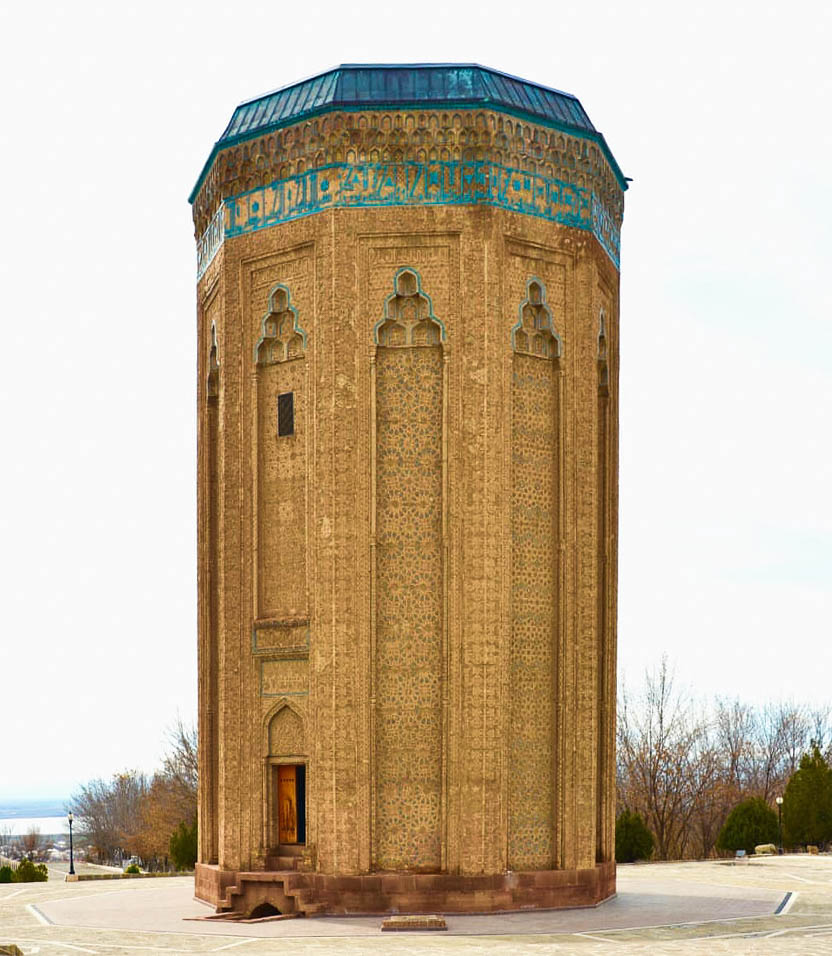
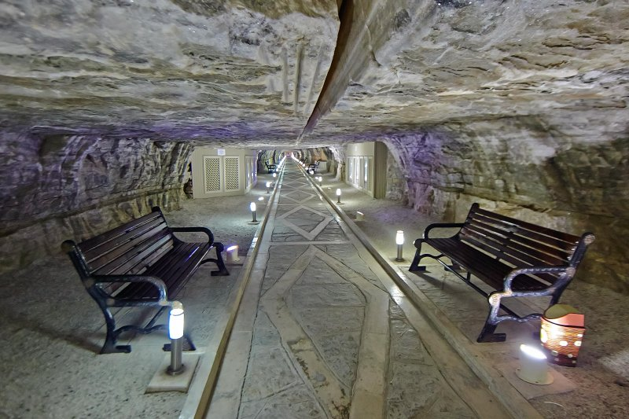
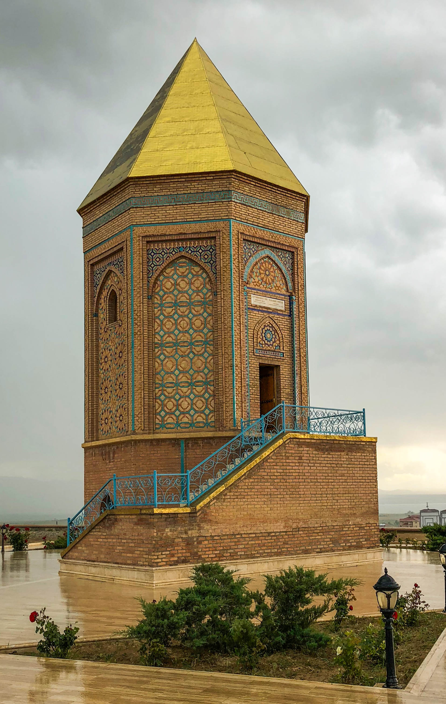
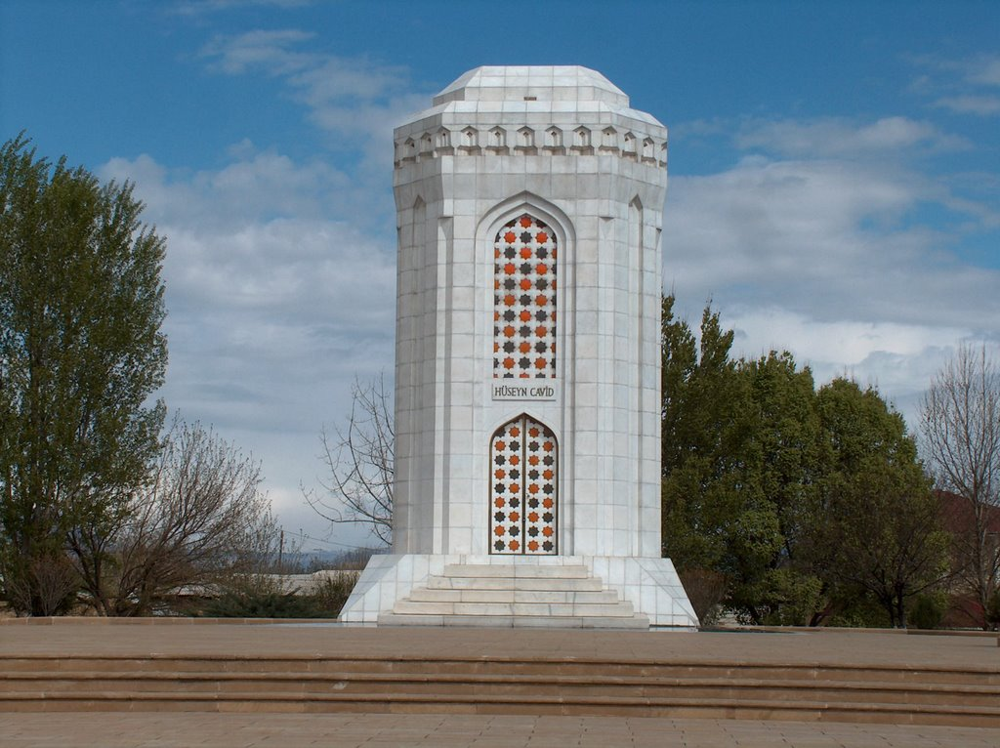
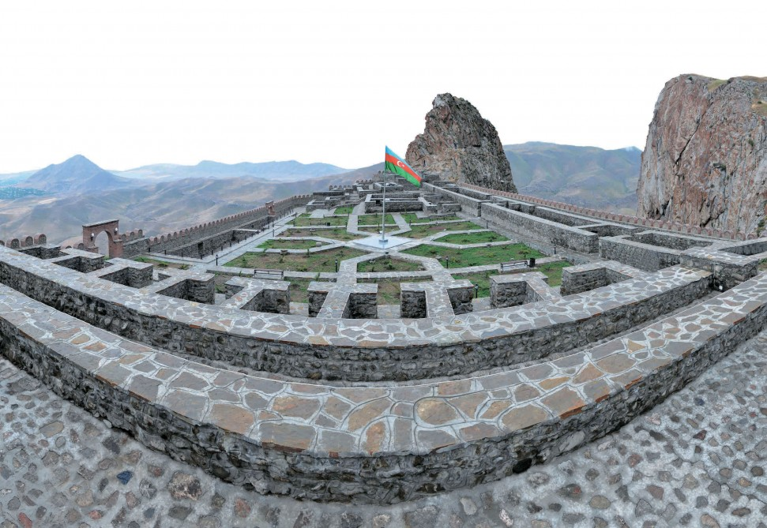

NAXÇIVAN
Mömünə xatun türbəsi
1186-cı ildə memar Əcəmi Naxçıvani tərəfindən inşa edilmiş türbənin ilkin hündürlüyü 34 metr olsa da, onun çadırvari günbəzi dövrümüzə tamamışdır; buna görə də dövrümüzdə türbə 25 metr hündürlüyə malikdir (dövrümüzə çatmamış çadırvari günbəzsiz). Mömünə Xatun türbəsi Atabəylər Memarlıq Kompleksindən dövrümüzə çatmış yeganə abidədir.
Duz dağı mağarası
Naxçıvan Muxtar Respublika Fizioterapiya Xəstəxanası 1979-cu il dekabr ayının 29-dan 50 çarpayılıq xəstəxana kimi Naxçıvan Duz mədəni bazasında, dəniz səviyyəsindən 1173 metr hündürlükdə fəaliyyətə başlamışdır.1983-cü ilin oktyabr ayından xəstəxanada çarpayıların sayı 100-ə çatdırılmışdır. 2003-cü ildə xəstəxana ən müasir tələblərə uyğun yenidən qurulmuş, müasir avadanlıqlarla təchiz edilmişdir.
Nuh Peyğəmbərin türbəsi
Naxçıvanla bağlı olduğu iddia edilən və burada geniş yayılmış “Nuh tufanı” əfsanəsində göstərilir ki, Nuh peyğəmbər yer üzünü su basacağı barədə Tanrıdan xəbər alaraq bir gəmi düzəltmiş, öz ailəsini və hər canlıdan bir cüt götürüb gəmiyə doldurmuşdur. Səfər zamanı gəmi Naxçıvanın şərqindəki İlandağa,Ələngəz dağına və Araz çayı sahilindəki Kəmki dağılarına toxunub keçmiş, Gəmiqayada quruya oturmuşdur.
Hüseyn Cavidin türbəsi
Kompleks Azərbaycan Respublikasının üçüncü prezidenti Heydər Əliyevin şəxsi təşəbbüsü və himayəsi ilə tikilmişdir. Hüseyin Cavidin həyat yoldaşı Mişkinaz xanımın və oğlu Ərtoğrulun qəbirləri də məqbərənin sərdabəsindədir. Hər iki məzar sərdabə inşa edilərkən – 1996-cı ildə buraya köçürülmüşdür.
Əlincə qalası
Əlincə-qala və ya Əlincə qalası — Azərbaycan Respublikası, Culfa rayonunun Xanəgah kəndində Əlincəçayın sağ sahilində yerləşən tarixi memarlıq abidəsi, Naxçıvan-Marağa memarlıq məktəbinin ən qiymətli nümunələrindən biridir. Bəzi tədqiqatçıların fikrincə, Əlincə qalası eranın əvvəllərində inşa edilmiş, eramızın V əsrində bərpa edilmişdir. Qala Əlincə dağının zirvəsində yerləşir.